油そばは東京発祥の「スープのないラーメン」です。柿川亭の油そばはチャーシュー・メンマ・海苔と王道のシンプルな盛り付けにオリジナルのタレと米油、そしてラー油と酢をお好みの分量で絡めてご賞味いただきます。また、多数あるトッピングの中からお好みに組み合わせて楽しめます。ラーメンに比べてカロリーや塩分を抑え、ヘルシーで女性や年配の方にも喜ばれています。
この油そばの文化を新潟から全国へお届けします。柿川亭は展開するエリアの地元の人々から愛されるお店となれることを目指しています。
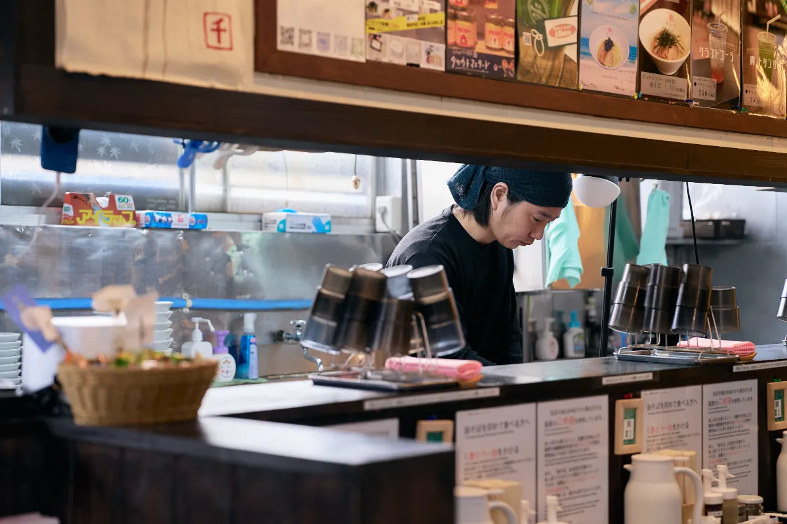
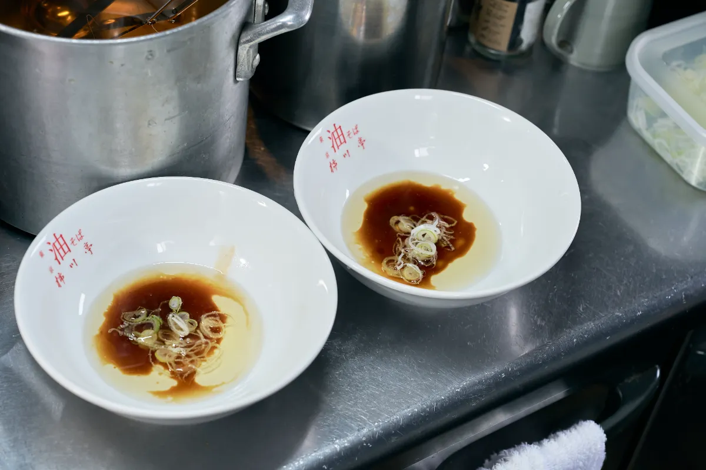
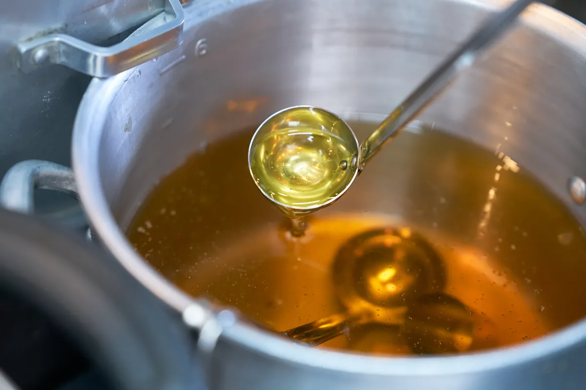
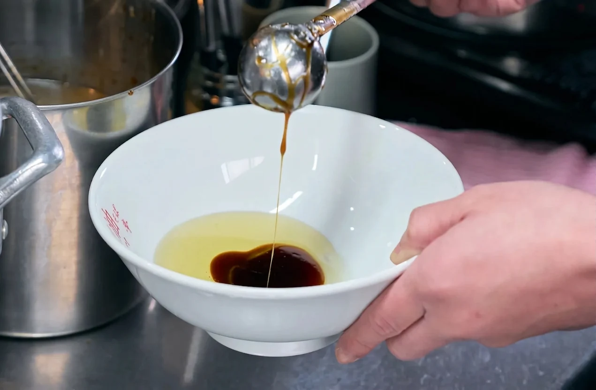
米ヌカから抽出された国産の米油を使用することで、油っぽさを抑え、あっさりとしたヘルシーな味わいを実現しています。
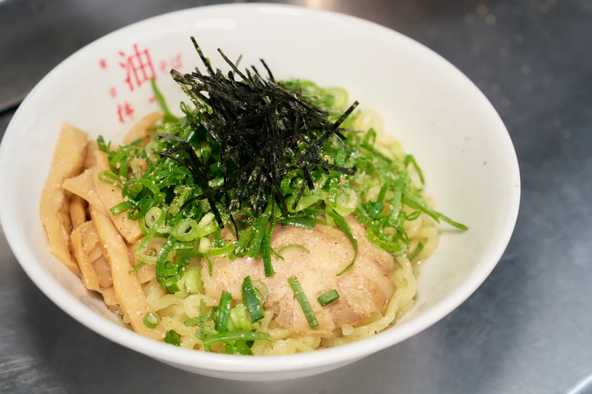
風味や食感を重視し、粉の配合を徹底して作られた麺と、独自に調合されたタレとの相性が抜群です。
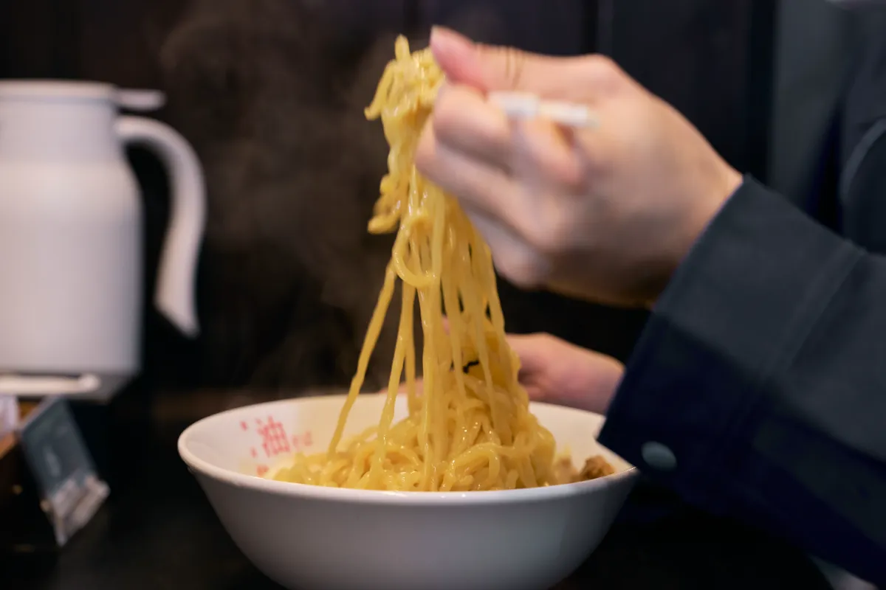
地元産のマスタードやバジル、長岡野菜を使ったマヨソースなど、多数のトッピングで自由にカスタマイズ。農家や飲食店と連携し、地元の食材を積極的に取り入れることで、地域とのつながりを大切にしています。
初めに酢とラー油をどんぶり１〜２周程度回しかけてください。かけないと本来の油そばの味になりません。最低でも１周ほど、ためらわずにかけてください。
どんぶりの底にタレと油が敷いてあります。麺をひっくり返すようにむらなく混ぜてください。
油そばはスープがないので冷めやすく、味が落ちやすいです。どうぞ温かいうちに召し上がってください。油そばは酢とラー油をかける量やトッピングによって自分好みの味を作ることも楽しみのひとつです。美味しい油そばの食べ方を探してみてください。
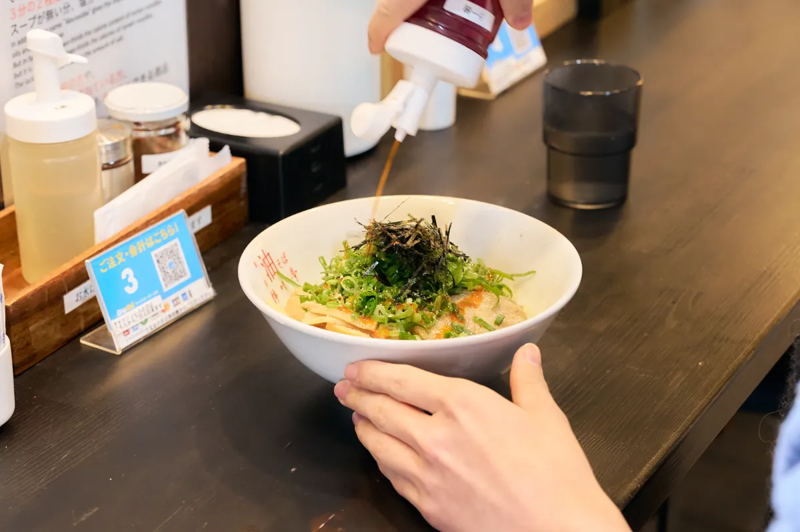
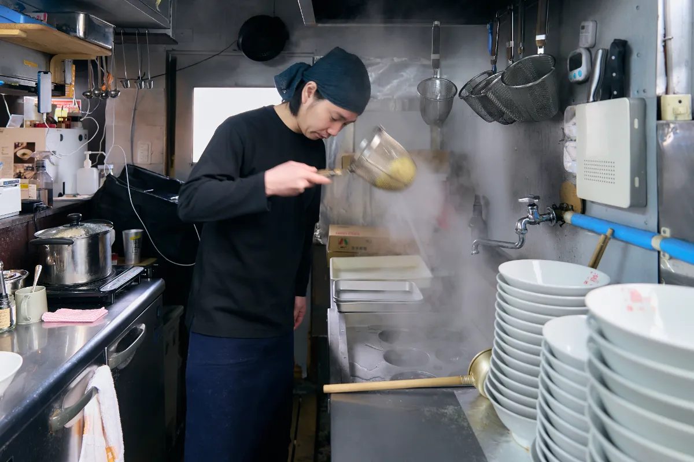
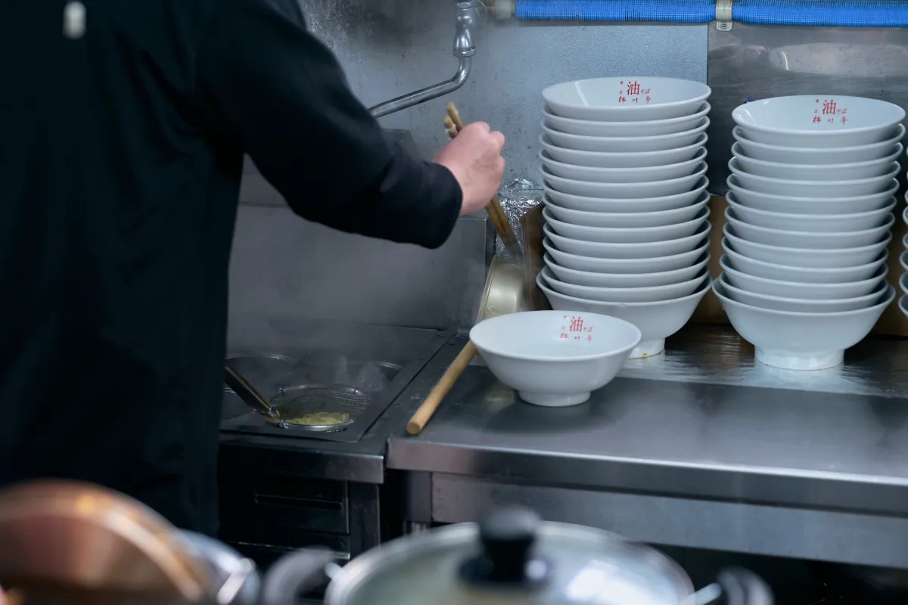
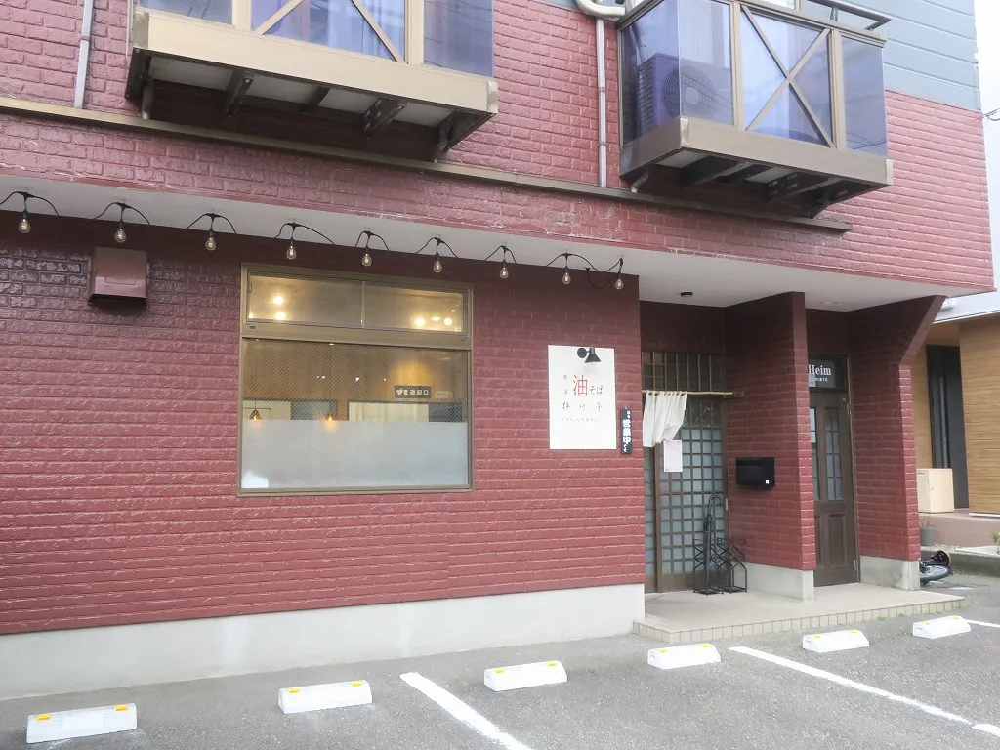
〒950-2111 新潟県新潟市西区大学南2-30-38
⚫︎営業時間
11:00〜14:30、17:00〜24:00
※日曜は夜営業22:00まで
⚫︎定休日／月曜
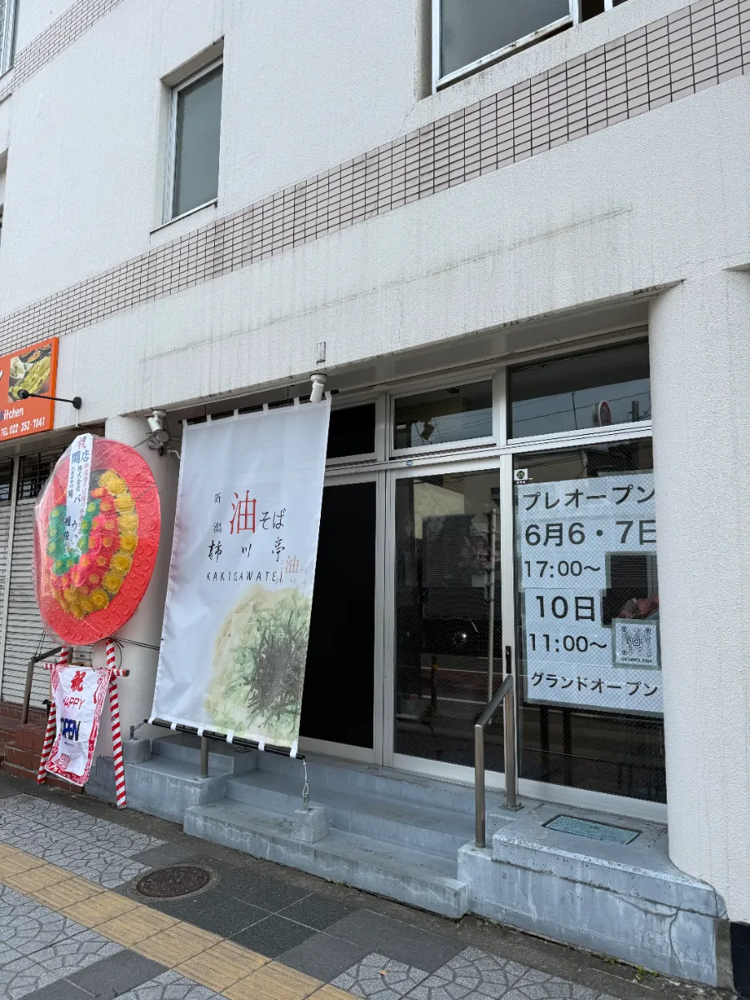
〒984-0053 宮城県仙台市若林区連坊小路81 熊谷ビル103
⚫︎営業時間
11:30〜14:30、17:00〜21:15
※土日は11:00から
⚫︎定休日／不定休
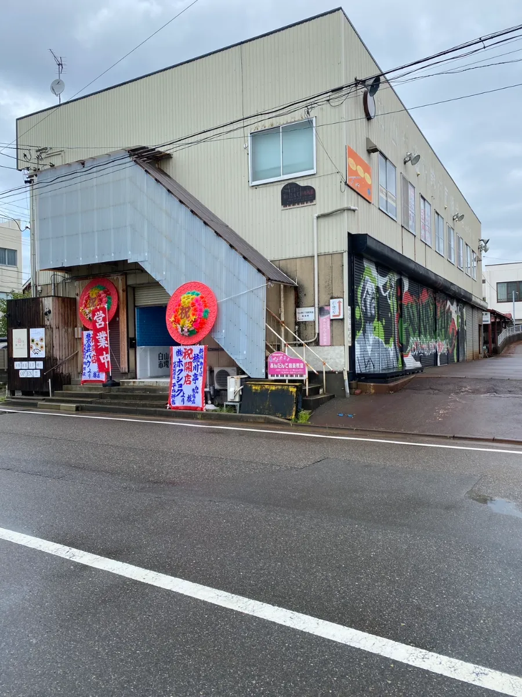
〒951-8131 新潟県新潟市中央区白山浦2丁目180-3
⚫︎営業時間
日・月 11:00〜19:00
火・水 11:00〜14:00 17:00〜20:00
木 16:00〜20:00
金・土 11:00〜14:00 17:00〜20:00
⚫︎定休日／不定休